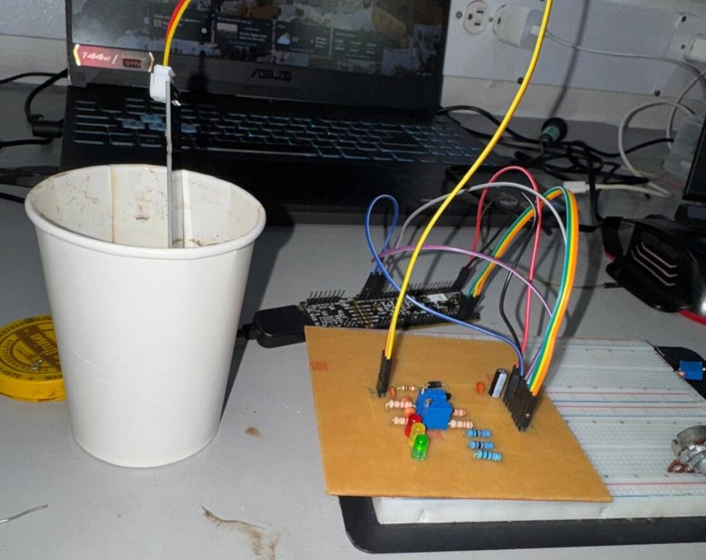
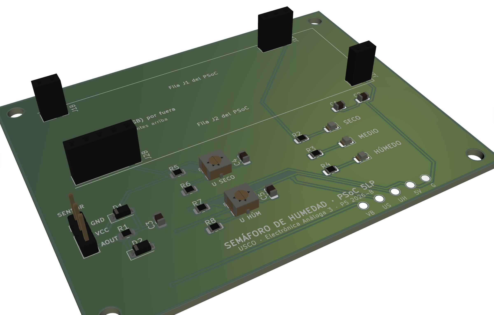

El punto de partida: ¿cómo se clasifica hoy una muestra?
En las prácticas de suelos, cada muestra se mide con un sensor y un multímetro, y luego se busca su rango en una tabla. Es lento, depende de leer bien la pantalla y los rangos cambian en cada práctica. El usuario lo pidió así [1]:
| Requisito | Valor mínimo aceptable |
|---|---|
| Estados | 3: seco, semihúmedo y húmedo |
| Cambiar los límites | Sin computador ni reprogramar |
| Procesamiento | 100 % analógico; la CPU solo informa |
| Proteger la PSoC | Resistir 12 V conectados por error |
| Conexión a la PSoC | Enchufar, nunca soldar (es prestada) |
| Costo de fabricación | ≤ USD 20 por 2 tarjetas |
El método: construir, medir y aprender diseño ágil
No diseñamos todo de una vez: construimos lo mínimo que se pudiera probar, lo medimos y, con lo aprendido, decidimos el siguiente paso. Cada proyecto del curso fue una vuelta del ciclo hasta el producto mínimo viable (PMV).
| Iteración | Construimos | Medimos | Aprendimos |
|---|---|---|---|
| P1 Explorar | Un generador de ondas con el DAC de la PSoC | Frecuencia con error de 0,4 a 2,2 %; con una carga la señal se cae | Una salida débil necesita un seguidor que la aísle |
| P2 Entender | Una entrevista al usuario de las prácticas | Cómo clasifica hoy y qué le cuesta | Necesita 3 estados y límites que cambie él mismo |
| P3 Proponer | Un semáforo con los límites fijos en el código | Funciona, pero cambiar un rango obliga a reprogramar | Los límites deben salir de perillas (trimmers) |
| P4 PMV | Tarjeta con trimmers, fresada en la CNC | Seco 2,68 V → rojo; húmedo 2,09 V → verde | Funciona, pero el montaje a mano no se puede repetir en serie |
| P5 Industrial | Tarjeta para fabricar y ensamblar en JLCPCB | 0 errores en las reglas; costo USD 19,75 | Producir en serie es otro diseño: el costo también manda |
La idea: cómo decide la tarjeta
Sensor
Seco ≈ 2,7 V; húmedo ≈ 2,1 VProtección
Con 12 V en el cable, a la PSoC llegan solo 5,2 VSeguidor
Copia la señal sin cargar al sensorDos comparadores
Límites de seco y de húmedo, fijados con dos perillasSemáforo
Si no es seco ni húmedo, enciende el amarilloMás seco = más voltaje. La decisión es analógica, dentro de la PSoC; el procesador solo avisa al computador.
| Voltaje del sensor | Estado | LED |
|---|---|---|
| Mayor que el límite de seco | Seco | Rojo |
| Entre los dos límites | Semihúmedo | Amarillo |
| Menor que el límite de húmedo | Húmedo | Verde |
Ejemplo: con límites de 2,5 V y 2,2 V, una muestra de 2,35 V enciende el amarillo.
Simulación: al agregar agua el voltaje cruza los límites y el LED pasa de rojo a amarillo y a verde.
El PMV (Proyecto 4): construido y medido

Fabricación: la CNC del laboratorio fresa el cobre y deja las pistas. Luego soldamos los componentes y probamos con suelo real.

2PSoC 5LP (decide y avisa al PC)
3Perillas de los límites
4LED del semáforo
5Tarjeta fresada en la CNC
| Prueba | Resultado | ¿Cumple? |
|---|---|---|
| Suelo seco | 2,68 V → LED rojo | Sí |
| Suelo húmedo | 2,09 V → LED verde | Sí |
| Medir el sensor sin seguidor | El multímetro bajó la señal de 2,68 a 2,50 V | No → se agregó el seguidor |
| 12 V en el cable (simulación) | Llegan 5,19 V con diodos Schottky; 5,64 V con 1N4007 | Sí, con Schottky |
| Separación entre pistas | 0,84 mm (mínimo 0,6 mm) | Sí |
Versión industrial (Proyecto 5): lista para fabricar

Render 3D (80 × 62 mm): la PSoC se enchufa en los conectores negros; la fábrica pone los componentes pequeños.
| Característica | P4 · PMV | P5 · Industrial |
|---|---|---|
| Quién la fabrica | Nosotros, en la CNC | JLCPCB (China) |
| Componentes | Grandes, soldados a mano | Pequeños (SMD), puestos por máquina |
| Capas de cobre | 1 | 2, con plano de tierra contra el ruido |
| Conexión a la PSoC | Cables sueltos | Se enchufa en un socket, sin soldar |
| Revisión | A simple vista | Reglas eléctricas y de fábrica: 0 errores |
Costo real cotizado para 2 tarjetas ensambladas: USD 19,75 (límite USD 20)
Últimas franjas: montaje (1,01) y conectores (0,72); la línea roja es el límite. Con conectores completos de 2 × 26 pines costaba USD 20,32: dejamos solo los 12 pines que se usan.
Conclusiones: lo que aprendimos
- Resolvimos el problema: la tarjeta clasifica al instante y sin computador; suelo seco → rojo, húmedo → verde.
- Escuchar al usuario cambió el diseño: los límites fijos pasaron a perillas.
- Medir evitó errores: el efecto de carga (P1 y multímetro) llevó al seguidor.
- Fabricar en serie es otro diseño: el presupuesto obligó a rediseñar el conector de la PSoC.
- Antes del pedido: medir con calibrador la distancia entre filas de la PSoC (20,32 mm por fotos) y confirmar con la fábrica la orientación de los LED.
 Código, planos y documentación completa
Código, planos y documentación completa